Hi, Sasha. A lot was written about the Israeli–Palestinian conflict this year, but I think something important is usually missed.
Historical texts about "how the borders changed" are useful, but they don't convey the PAIN. In my view, to understand a complex conflict, you have to listen to people on both sides and feel their pain as your own. That doesn't mean "agreeing with everything". You can and should object. But AFTER you understand.
In 2023 I happened to be getting to know the Middle East through living voices: songs, tweets, memes. Of course, in one year I only scratched the surface. But it was enough that after October 7, half the comments on the internet made me feel "oh come on, you don't understand anything".
So I wrote a big piece about music and society, collecting the songs and the pains of both sides:
Important caveats:
- I'm not an expert and may be wrong.
- The text contains terrible simplifications.
- When I convey the views of the sides, that doesn't mean I fully agree with them.
- I spent half a year poking at Arabic and Hebrew on Duolingo, but didn't get far.
- Just in case, I'll state the obvious: I'm against terrorism, antisemitism and discrimination against Muslims. Nowhere do I call for any of it.
The Palestinian view
Part 1
Song: MC Abdul, «Shouting at the Wall»
Events: the strikes on the Gaza Strip (2008–2009, 2012, 2014, 2021)
In last year's post about Eminem, I mentioned that the song «Not Afraid» is meant to help people overcome life's hardships. And now I've learned that it helped a boy from the Gaza Strip.
He fell in love with the song, learned to rap it, and started writing his own. Adults from Palestine and Ireland noticed his potential and helped. And in 2021 his music video about life under bombardment came out:

When I stumbled on the video this summer, I was immediately blown away by the flow and the rhymes: "OH WOW, THIS KID RAPS BETTER THAN MANY ADULT RAPPERS".
And the content turned out to be this: the whole building shaking as if possessed; telling his little sister that the noise is fireworks so that she'll fall asleep; shouting at the wall while nothing changes.
The song blames "bad Israel", but doesn't call for violence. In an interview, Abdul says he doesn't understand anything about politics yet, but he's for peace.
Some will suspect that adults write pitiful lyrics for the child here, for the image of "long-suffering Palestinians". Honestly, I don't know how much the adults contributed. But you can see that Abdul himself relates to Tupac's song «Changes», which is precisely about "my people are oppressed, but we have to learn to live in peace".
On the day of the October 7 terrorist attack, I was thinking about the Israelis. And when the hellish bombing of Gaza began in response, I thought of Abdul: is he there? Is he alive? It turned out he had already signed with an American label and moved to Los Angeles. Perhaps the song «Not Afraid» saved his life.
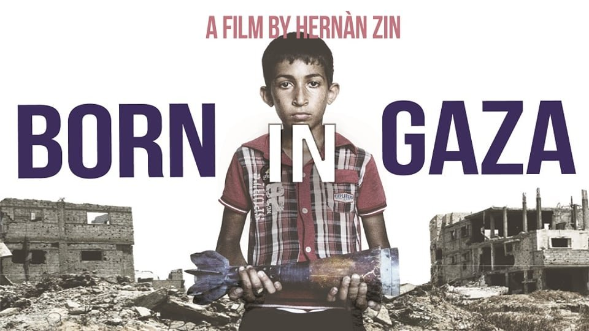
Many will say: life under bombardment is terrible, but why does Abdul blame Israel's return fire rather than the terrorists?
I think you have to understand what "a teenager's life in Gaza" even is:
You're born in a place smaller than Saint Petersburg. It's surrounded by a fence, with armed soldiers at the gates. You can't just leave, only under certain conditions. There's a seashore, but try to sail away and the Israelis will start shooting. So you were born in something like a concentration camp (albeit with a beautiful beach).
The jailers had their reasons, but you're not to blame for them. And this creates pain: you haven't done anything wrong, and you're already locked up.
Sometimes Israeli missiles come flying in. Supposedly "at terrorists", but they kill civilians like you too. That's the second pain: you haven't done anything to the Israelis, but their missiles threaten your life.
Lots of people around you have PTSD from the bombings, and everyone knows someone who died, within a couple of handshakes. The third pain: the Israelis killed someone close to you.
Israel explains the strikes as fighting terrorists. But if you don't want to die from a missile, what are you supposed to do? Overthrow a terrorist organization with your bare hands? The fourth pain: the Israelis punish you for something you can't change.
There's no defense system over you, but there is one over Israel. So the people sending missiles at you aren't really risking their own lives. While you're in danger and in poverty, their Instagrams show expensive cafés instead of ruins. And the only Israelis around you are stern soldiers with rifles who don't see you as a human being. The fifth pain: successful Israelis are willing to interact with poor you only in the form of a missile.
I think in a place like that it's hard not to come to hate Israel. And since many lost loved ones and wanted to avenge them, the question suggests itself: could new terrorists not emerge there? I absolutely don't justify terrorism, but if we want to live without it, it's important to understand what leads to it.
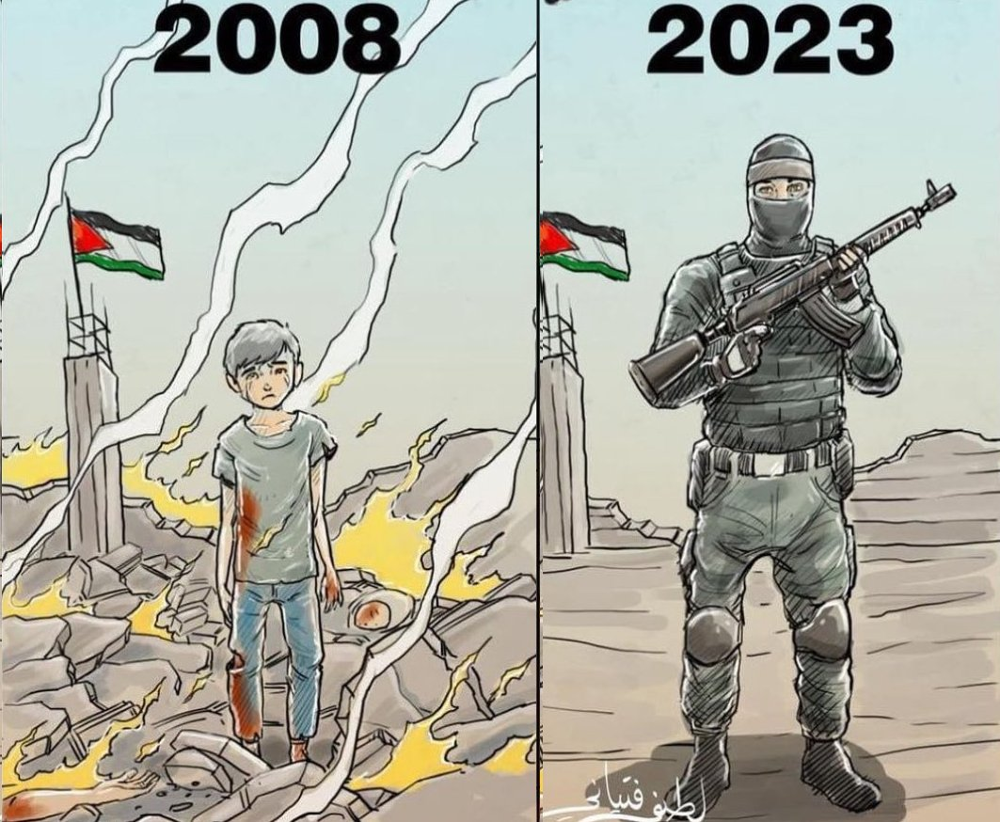
Besides the horrors of the bombings, in Gaza you learn the Palestinian view of history. According to which, the Israelis have no right to the land they bomb you from. So who are you going to criticize in your songs?
To understand why Palestinians see history this way, let's go back to the early 20th century.
Part 2
Song: a medley
Events: the background (before 1948)
In Jordan, old Palestinian songs (from around the 1920s) were collected and recorded as a mashup with modern arrangements:

In this video (and many others in this text), you can turn on English subtitles
Someone will object: "What 'Palestinian songs', if Palestinians didn't exist as a people yet? There was just a place, Palestine, where Arabs lived." Sometimes people even say "after Israel was created, the Arabs invented a people so they could suffer from its oppression". They cite Golda Meir's phrase "there was no such thing as Palestinians".
The historian James Gelvin wrote that a Palestinian identity emerged among the Arabs in the course of the conflict with the Jews, but that doesn't make it "not real": having a common enemy is exactly what brings people together. And today, Palestinians are hurt by the words "an invented people": "we're being denied the very fact of our existence".
And music helps here: here are our songs, here's our keffiyeh, here's our Handala, we're a real people. The song «Where to? To Ramallah» was written before Israel even existed, and today that city is the de facto Palestinian capital!
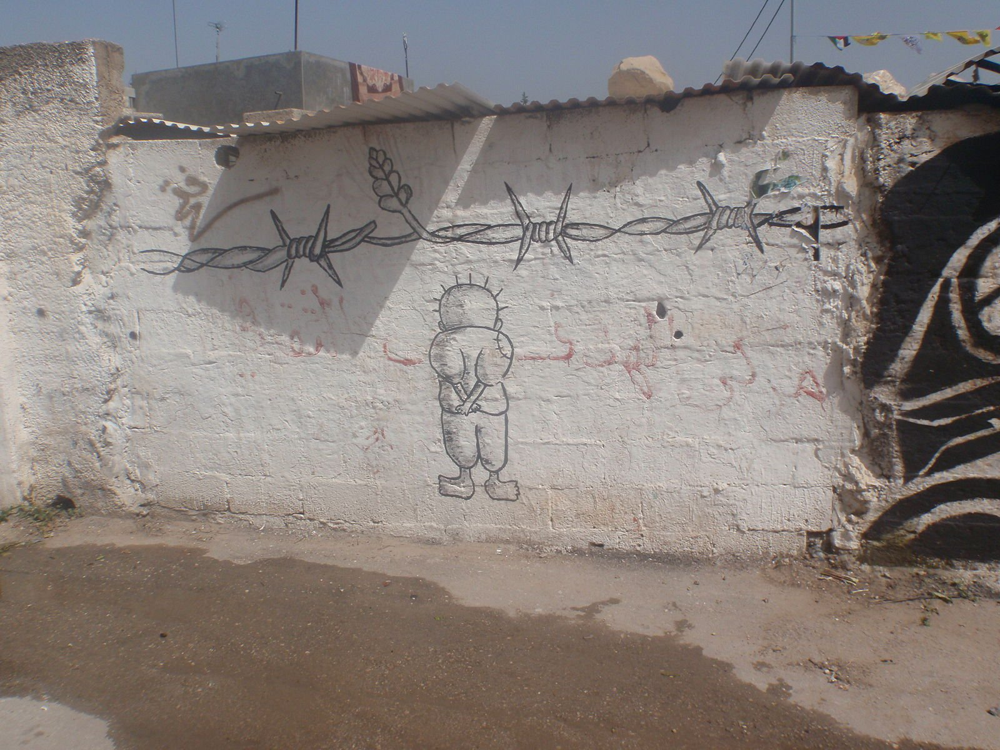
That said, in the early 20th century Ramallah wasn't a capital, and all of Palestine was part of the Ottoman Empire. Arabs lived there, along with a few Jews. And Zionist Jews from other countries increasingly wanted to "return there".
During World War I, Britain told the Arabs: "Help us fight the Ottoman Empire, and you'll build an Arab state on the lands you win back." The Arab revolt did happen. But Britain secretly began negotiating with France on dividing those lands. And in 1917 it signed the Balfour Declaration, allowing the Jews to create a "national home" in Palestine.
The result is pain: Britain promised the land, and then quietly disposed of it its own way. There are nuances, and the situation can be read differently. But the Arabs read it like this: the damned colonizers invited the Jews onto our land, with no right to do so.
There were more and more Jews in Palestine, and conflicts began. And a question arose: what will they do to us once they've all gathered here? That's pain too: the Palestinian Arabs felt threatened.
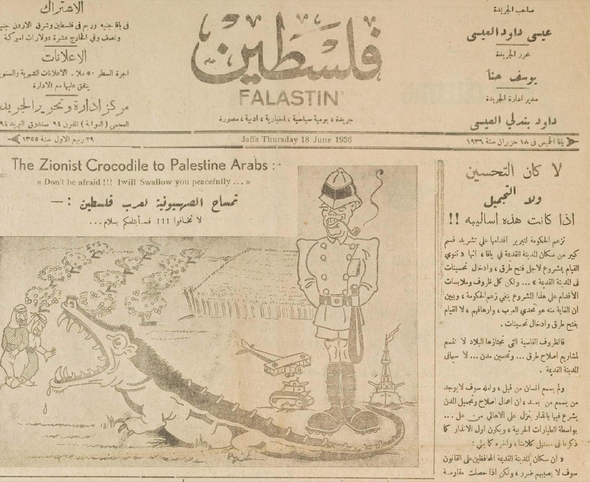
After the Holocaust, Europeans felt that the Jews needed a state. And they decided to divide the Palestinian lands into an Arab and a Jewish country.
To the Arabs this sounds like: Europeans slaughtered the Jews, and now they're giving them our land for it. What does it have to do with us? If the Germans are guilty, let them give away their land! That's pain: the damned colonizers solve their problems at our expense.
The Arabs rejected the UN's proposed partition. Why is someone dividing our land? Why are we offered half when we're 70% of the population?
The Jews, on the other hand, accepted the plan and in 1948 created the State of Israel. Then a number of Arab countries declared a war of annihilation against it.
Part 3
Song: Fairuz, «The Flower of Cities» («Zahrat al-Mada'en», زهرة المدائن)
Events: the Nakba and the Naksa (1948–1967)
Israel managed not only to hold out but to expand its territory. Of what had been divided in 1947, the Arabs were left with the Gaza Strip and the West Bank.
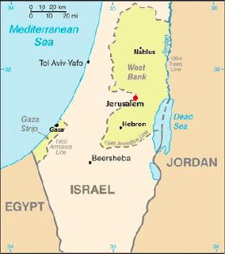
And because of the war, more than 700,000 Palestinian Arabs left their homes. Some, like the residents of Ramle and Lydda, were driven out by the Israeli army. Others fled on their own after hearing about the Deir Yassin massacre. At the time they thought they'd return as soon as the war was over.
But Israel, having annexed a lot of land, banned the refugees from returning there and still hasn't changed that decision. And other countries don't welcome them either, making them "eternal refugees". That's why in some Palestinian families, keys to the homes they'd like to return to have been passed down for 75 years.
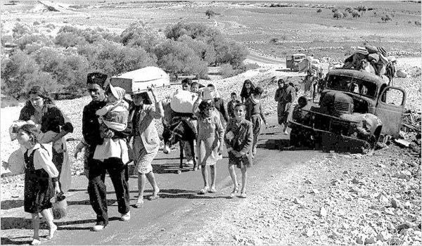
The father of the supermodels Bella and Gigi Hadid claims that in the 1940s in Palestine his parents took in a family of Jewish refugees, and in the end that family took over their house. Literally the Russian folk tale about the fox who moves into the hare's hut and throws the hare out.
Palestinians call all this the "Nakba" ("catastrophe", النكبة). And the Nakba is their main pain: they feel like an exiled people and want to set it right.
You can object, "the Greeks don't whine about the homes they left in Turkey". But the fact is that this shaped Palestinian identity: people came to feel like a people with their own defining event. Telling a Palestinian that the Nakba doesn't really matter is like telling a Russian that World War II doesn't really matter.
Repatriation to Israel makes it worse: "so a Jew born anywhere can easily move to Haifa, but my family from Haifa is forbidden to return there?"
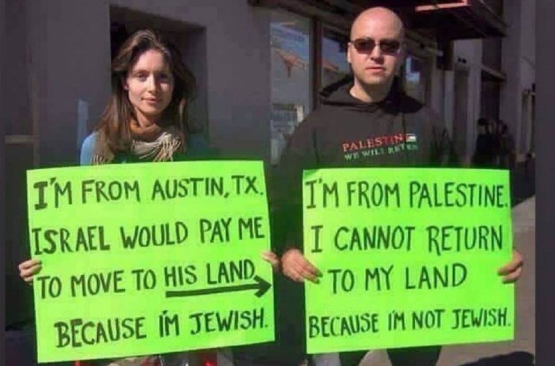
In the Six-Day War of 1967, Israel won again, occupying the Gaza Strip and the West Bank. Palestinians called this the "Naksa" and felt even more exiled.
Al-Quds (the Arabic name for Jerusalem) is especially important. The city is religiously significant to both Muslims and Jews. After 1948 the Jews had the western part and the Arabs the eastern: a compromise of sorts. In 1967, when Israel occupied all of it, it didn't drive the Arabs out, but it caused pain: the enemy controls our holy city.
Jerusalem's Al-Aqsa Mosque is so important in Islam that the city's fate concerns the whole Arab world. And the key song about it was sung by the Lebanese singer Fairuz, one of the greatest Arab singers in history.

This nine-minute epic was written in 1967, right after the occupation. So the song is a longing for "something important that was lost", with the hope of regaining it.
Part 4
Song: «The Red Banner Is Raised» (من أجل فلسطين ,طلت الراية الحمرا)
Events: the "liberation movement" and the peace process (1967–2000)
The previous songs show that the stereotype "Arabs live by violence alone" is stupid. But picturing them all as bunnies would be wrong too. Organizations arose "to fight the occupiers", and here's a song by the Popular Front for the Liberation of Palestine:

The PFLP stood for Marxism-Leninism (hence the "red banner") and a "democratic Palestine" where Arabs and Jews "could live without discrimination, both ethnic and class". It sounds nice, but the organization hijacked planes, and a number of countries designated it a terrorist organization.
Today it's half-forgotten, and the names people hear are Hamas (brutal and Islamist) and Fatah (secular, and over time it moved away from terror).
Arabs answer the question "what methods of struggle are acceptable" differently. But they agree that "this is a righteous struggle against an oppressor, don't expect flowers". And in 1987–1993 came the intifada, an armed uprising.
To fix the situation, the US acted as mediator of a "peace process". The idea was that it would end with two equal states. For that, the Palestinians had to recognize Israel's right to exist, and the Israelis had to approve the creation of an independent Palestine. These concessions were achieved.
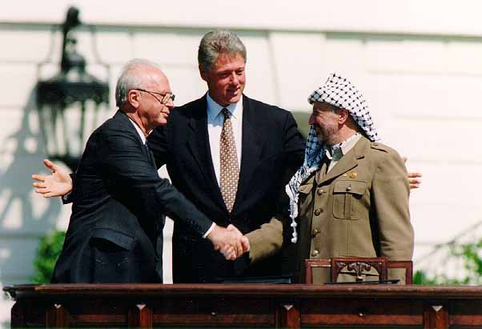
But then things got stuck on the hard questions: the exact borders, the status of Jerusalem, "the Arabs' right of return". And by 2000 the peace process had bogged down halfway: Palestine was made partially autonomous.
Part 5
Song: DAM, «Who's the Terrorist?» («Min Erhabi», مين إرهابي)
Events: the second intifada (2000–2005), Hamas in Gaza (2007)
In 2000 a new intifada was beginning, and Palestinian hip-hop was being born in the Israeli city of Lod: there, an Arab named Tamer Nafar was inspired by rappers like Tupac.
Because of drug dealing in Lod, the Israeli police harassed the Arabs. And Tupac's songs fit very well: we're oppressed, the police are cruel to us, but we also kill each other.
Tamer founded the group DAM, and «Who's the Terrorist?» became a hit.

It's a manifesto, roughly: you call us terrorists, but you're the terrorists yourselves; you took our land, you kill us, and we can't go to court, because there too you're the ones who decide.
Here you can see pain: Palestinians resent being called terrorists, while Israel isn't recognized as a terrorist state. Wikipedia's article "Israeli war crimes" is extensive, while the court in The Hague didn't take them up for years.
DAM became something like the Russian group Kasta: respected veterans, capable both of irony («Mama, I Fell in Love with a Jew») and of great seriousness («If I Could Go Back in Time»). You shouldn't judge them by «Who's the Terrorist?» alone and consider them close to actual terrorism; on the contrary, this is "peaceful musical resistance". And it criticizes not only Israel but Arabs too. In a song about women's rights, they say that if we discriminate against each other ourselves, of course others will too.
After the intifada came a new turn. First, Israel ended its occupation of the Gaza Strip: Arabs, live there however you like. In 2006, elections to the Palestinian parliament took place, and Hamas unexpectedly won. Then it took over the whole Gaza Strip by force.
Because of the elections, many say "the people of Gaza have only themselves to blame". But here too there's pain: "Why don't people remember that the elections weren't about control of Gaza, that Hamas pretended to have mellowed, that half of Gaza's current population wasn't even born yet?"
Part 6
Song: Shadia Mansour and Omar Offendum, «We Have to Change» («Lazim Nit'ghayyar», لازم نتغير)
Events: the blockade of Gaza (since 2007), the growth of settlements in the West Bank
There's a Palestinian diaspora all over the world, and interesting things emerge where cultures meet (like the series «Mo»). That's what happened with the London singer and rapper Shadia Mansour. She feels Palestinian (her very first video was about the keffiyeh), but she values women's rights and free speech. She performs in a traditional dress, but without a hijab.
She has lots of features with rappers; I'll show my favorite. Omar Offendum is a Syrian who grew up in the US, and he too combines Eastern and Western values.

Here, too, you can turn on English subtitles
It sounds interesting, reminiscent of the Russian artists Drummatix and Horus. And the content isn't reduced to "the Jews are to blame again".
Omar quotes a hadith: "There should be neither harming nor reciprocating harm." And he poetically criticizes Arabs who trust television: his image is a boat of life drifting between "the Peninsula" and "the Lighthouse" (the channels Al Jazeera and Al-Manar).
Shadia says she has hope in humanity, but talk alone won't help. And her main point is that the world is losing its balance, and we have to change. So Arabs may want change not only from the Jews but from themselves.
This song is from 2013. What had happened by the time it came out?
Having taken the Gaza Strip, Hamas began firing rockets at Israel. Israel decided to wall itself off: it built the Iron Dome missile defense system, fired back, and put the whole Strip under a "blockade" with thorough checks on people and goods.
And in the West Bank there's a nominal Palestinian administration, but in reality Israel has more control. For example, it has set up lots of checkpoints. Arabs regularly face the situation of "unfriendly Jews pointing rifles at you".
This leads to pain: Palestinians feel they're being strong-armed; they've become prisoners on their own land. And the "jailers" may abuse their powers.
On top of that, there were more and more Jewish settlements in the West Bank. Under international law they're illegal. But religious settlers believe it's their land, because the Torah says so.
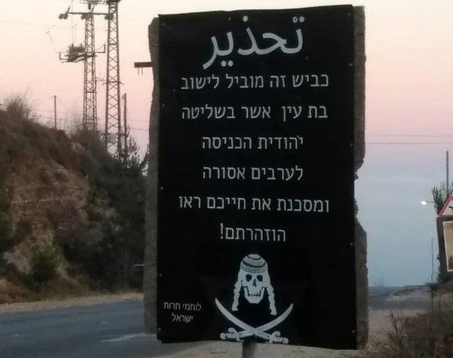
To the Arabs it looks like this: the Jews put their holy book above the law, so they quietly seize our land. And our book says that then this people must be destroyed. But the world lets them, and calls us terrorists. Why may the Jews put their holy book above the law, and we may not?
All right, let's try to live not by the Quran but by the law. How do we stop illegal settlements?
- Demand it? Doesn't help.
- Sue? An Israeli court will just laugh.
- Go to the UN? We tried: it issues resolutions saying "Israel, stop", but Israel wipes its feet on them.
- Get a legally binding resolution? We tried: the US blocked it.
- Go to the International Criminal Court? We tried: they said "Israel hasn't accepted the Rome Statute".
- We even accepted the Rome Statute ourselves and said "a crime on our territory". They seemingly accepted the application, but then didn't really do anything.
- Persuade everyone to impose sanctions? We tried, but nobody cares.
- Declare war? Israel has forbidden us from having an army.
And here Palestinians feel pain: what options besides terrorist ones has Israel even left us? If a gangster robs you and the police are in his pocket, what do you do?
And another pain: why is Israel called "a civilized democracy" and we "primitive barbarians", if it's Israel that ignores the law and only understands brute force?
But the main pain is this: the Nakba continues. Through illegal settlements, Israel is gradually annexing our land.
And if we don't resist, we'll simply have none left. And if Israel has left us no civilized ways to resist, then what is it complaining about?
Part 7
Song: Daboor & Shabjdeed, «Inn Ann»
Events: the tensions of recent years (2020 to today)
New problems were added to the illegal settlements.
The first: evictions of Arabs in the Jerusalem neighborhood of Sheikh Jarrah, where Jews moved in instead. Critics call it a plan to "Judaize" the city.
Legally it's complicated. But for the Arabs it's a simple pain: enemies are driving us out of our holy city. The young Jerusalem rapper Daboor released the song «Sheikh Jarrah». And a video went viral in which, to the reproach "you're stealing my house", a Jewish man replies, "well, if I don't steal it, someone else will":

The second theme: the "shift to the right". Israel was already on a course of "keeping the Arabs under its thumb", but in 2022 the far-right ministers Itamar Ben-Gvir and Bezalel Smotrich made it worse. For context: Ben-Gvir once had a portrait at home of the Jewish terrorist Baruch Goldstein, who killed 29 Palestinians.
Here the pain is clear: people with murderous views of us have come to power on the other side.
There's a long-running debate about Israel and apartheid: have the Arabs become second-class citizens? Benjamin Pogrund was born in South Africa, and for many years he wrote, roughly: "Israel has many problems, but it's not apartheid, take it from me." And this summer he wrote that he now thinks it's all heading toward apartheid. He's horrified, because he feels South Africa's history repeating itself.
And in 2018 Israel passed the Nation-State Bill, enshrining the foundational status of the Jews. Arabs back then put a sarcastic stamp on their avatars, highlighting their pain: nobody wants to be a "second-class person".
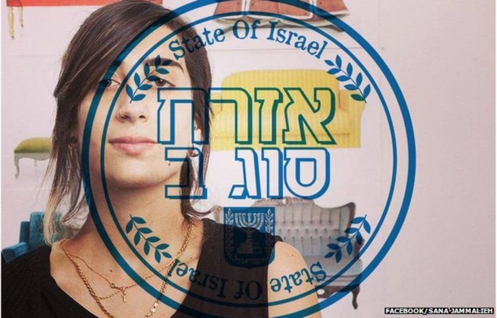
And the third theme concerns the Al-Aqsa Mosque.
First, the Arabs were enraged by Israeli police raids there. They didn't come out of nowhere, but because of Palestinians throwing stones. Still, for a Muslim, seeing Jews at Al-Aqsa forcing everyone face down on the floor is pain.
Second, radicals like Ben-Gvir started going up to this mosque. The site is holy for Jews too, but under an agreement with Jordan they can't go there whenever they please. And although Ben-Gvir didn't enter the mosque itself, for a Muslim his actions are pain.
Hamas sharply criticized this, and Egypt and Jordan directly called it a dangerous provocation. And the October 7 attack was called "Operation Al-Aqsa Flood", referring to Al-Aqsa. So there's this pain: "Israelis, you were warned not to stick your fingers in the socket, you kept doing it, you got a shock, and now you're punishing us".
In 2021, «Inn Ann» became a Palestinian hit:

I don't fully understand the lyrics; I just feel the vibe of street hip-hop that really HITS. But an interview with Shabjdeed gives context. He says his generation approaches the conflict in a new way, because it grew up in less bloody times than the intifadas. And it has almost found common ground with the Jews.
That interview came out on September 20, 2023. Soon the point about common ground was shattered.
Part 8
Song: Mohammed Assaf, «My Palestinian Blood» («Dammi Falastini», دمي فلسطيني)
Events: the present
The singer Mohammed Assaf grew up in the Gaza Strip, where the only place he could show his talent was at weddings. But then he managed to get to Egypt for the show Arab Idol, and won triumphantly with the song «Raise the Keffiyeh». Even more important is the song «My Palestinian Blood», which became a kind of anthem.
It temporarily disappeared from streaming services, and the Arabs claim it was under Israeli pressure. After a wave of outrage it returned, but it's not the first such story. Another Palestinian pain: Israel silences our voices with censorship.
Israelis made a remix, «My Jewish Blood», and proudly post it on TikTok. The Arabs' reaction: wasn't stealing our land enough, now you've decided to swipe our song too?
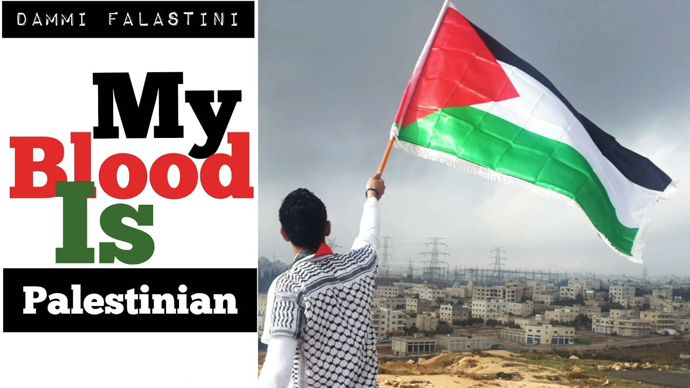
Now to current events. On October 7, Hamas invaded Israel, inhumanly killed more than a thousand people and took hundreds of hostages.
Since the approach of "fencing Hamas in" hadn't worked, Israel decided in response to destroy it with the army. Since the terrorists use civilian sites, this means many casualties, including children. Far more than in the original attack.
This sparked a debate about the limits of self-defense. Isn't Israel, in response to a monstrous act, committing an even more monstrous one?
The Arabs are sure it is. And there's this pain: even the harsh Old Testament principle of "an eye for an eye" meant "only one eye for an eye"; why do they take dozens of ours for one? The disproportionate Dahiya doctrine is immoral and unlawful.
Many call it genocide. That word doesn't quite fit, but Gaza is a nightmare, and not only because of the deaths. In an ordinary war, civilians can at least flee. Here, millions of people have been locked in a torture chamber for the third month,
where every morning you find out "which of the people you know have died",
where there are masses of wounded and almost no medical care,
where there are mass shortages of food, water and everything else,
where half the housing is already destroyed, and people will have nowhere to return,
where many people's warm clothes are buried under the ruins of their homes,
where communications are so unstable that sometimes you can't check "whether your loved ones are alive",
where, I think, everyone's mind is wrecked for life.
And many people around the world felt pain: "This can't be right. However terrible the attack was, the response is inhumane too".
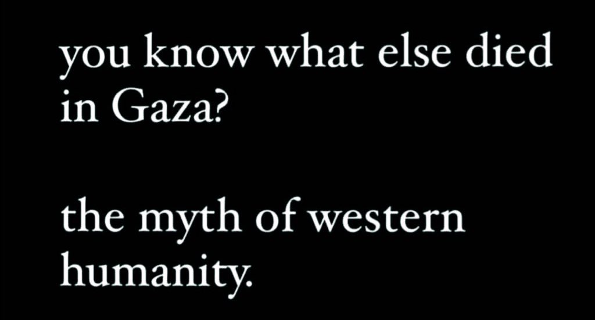
Rallies in support of Palestine sprang up, and people began arguing about them: are the participants simply worried about children under the bombs, or do they support terrorism? If the former, why don't they protest against Hamas? So it must be the latter!
I think two things matter here:
- In the West, the question "do you condemn it" is seen as "yes" or "no". But among Arabs I more often saw something like this:
"There's no point condemning inevitable things. If you leave a pot on the stove with the lid on and it boils over, will you condemn its boiling? The prison city of Gaza was exactly such a covered pot."
- In the Arabs' view, the Palestinian people are oppressed: their existence is denied, part of their land has already been taken and now the rest is being taken, and any struggle against this is crushed.
And the Arabs see it like this: whatever Hamas did, it wouldn't have come into being without the oppression. Let's deal with the root cause rather than condemn and discuss the consequences.
And there's pain: why is Nelson Mandela considered a liberation hero, although he also used violence, while our struggle is condemned?
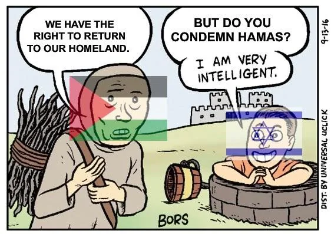
The Arabs are also enraged by Israel's rhetoric. It would be one thing if Netanyahu had said: "We deeply sympathize with the civilians of Gaza, but we have no other choice."
Instead, Netanyahu says: "We are the people of light, they are the people of darkness." And the Arabs feel pain: "That sounds literally like Hitler. What is this dehumanization?"
And remarks by some Israelis like "flatten Gaza" look like calls for genocide. That's pain too: "And these cannibals are 'the people of light'? They've turned into the very Nazis they once suffered from".
I'll finish with a new song by MC Abdul. After October 7 he was in safe California, but he felt great pain: he was worried about his family who stayed in Gaza. And recently, with the words "We are human too", he posted a song in which he included a voice message from his younger brother.
The Israeli view
Part 1
Song: «Hava Nagila» (הָבָה נָגִילָה)
Events: the background (before 1948)
Explaining the Israeli view is easier than the Palestinian one. The Jewish people have an obvious first pain: someone always wants to kill you. To feel the problem, you don't need to be a historian; empathy is enough. In principle, I could stop at this paragraph.
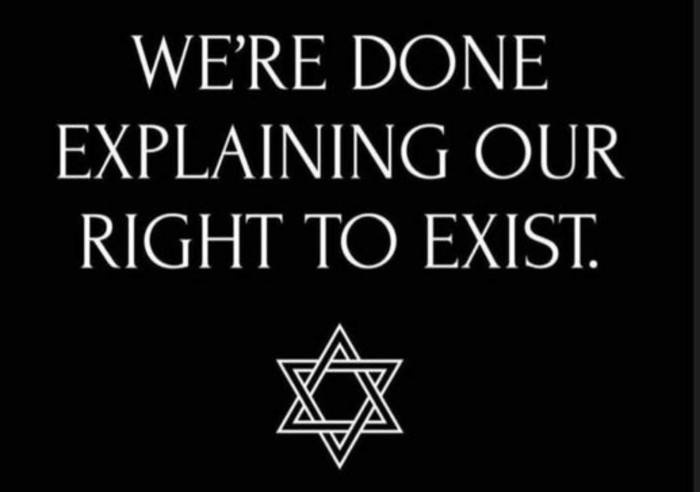
Even when they weren't being killed, there was the second pain: someone always wants to drive you out. Wikipedia has a whole page, "Expulsions and exoduses of Jews". It's also easy to see why one might not like that.
Now let's start from the beginning: how were they killed and driven out, and how does that lead to the current conflict?
The Jews trace their roots to the Israelites, who lived in the Middle East thousands of years ago. Here arises the third pain: why do the Arabs say "our land", if we were here much earlier, and some of us never left? How can we be "colonists" if for centuries we longed to return to Jerusalem? You might as well call the Native Americans colonists.
In the days of the Roman Empire, the Jews weren't keen to submit to it. In the end, Rome destroyed the Temple in Jerusalem, and most Jews scattered across the world. They kept a shared identity instead of dissolving into other peoples, but this created the fourth pain: you become a people in exile, deprived of its land.
In other countries, Jews couldn't live in peace because of the second pain:
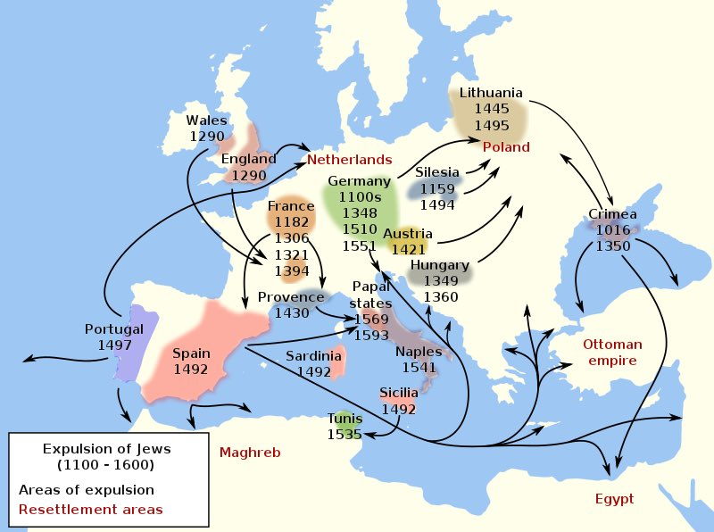
And in the 19th century, the first pain arose more and more often too: people wanted to kill Jews even more than usual.
When you're killed and driven out in other people's countries, you want one of your own. And in 1897, Theodor Herzl convened the first Zionist Congress to create a Jewish state. The Zionists were willing to consider various locations (from Uganda to Argentina), but decided to return to the region of Palestine after all.
While World War I was still going on, Britain was already busy carving up the Ottoman Empire's hide. And in 1917 it signed the Balfour Declaration, allowing the creation of "a national home for the Jewish people" in Palestine.
Not yet a full-fledged state, but already a reason to rejoice. And in 1918 the song «Hava Nagila» ("Let us rejoice") appeared. It's hard to pick one performance out of so many, so I took a video where the (simple) lyrics are translated.

(There's not a word about food here, but it reminds me of the joke that every Jewish holiday boils down to the formula: "They tried to kill us, they failed, let's eat.")
Jews gradually began gathering in British-controlled Palestine, where Arabs and some Jews already lived. Nobody had a state of their own, and at first they managed to get along, but conflicts gradually arose. In 1929 there was a pogrom in Hebron in which dozens of Jews were killed. Even though they'd fled to Palestine to escape pogroms. The first pain again!
But on this land, the Jews were ready to fight. The defense organization Haganah emerged, then the radical Irgun, which even carried out terrorist attacks. So violence back then went in different directions (for example, against the local British authorities).
As we know, at one point in the 20th century people wanted to kill Jews with record force. The horrors were mainly in Europe. But a photograph of the Mufti of Jerusalem, Amin al-Husseini, hints that the Middle East was no place to relax either:
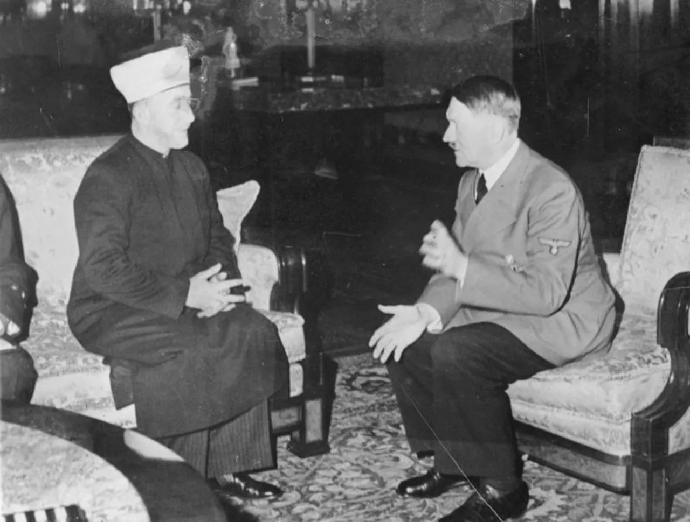
All of this strengthened the idea that "the Jews need a full-fledged state". In 1947 the UN proposed a plan to divide the land into two countries. The Arabs refused, the Jews unilaterally agreed, and on May 14, 1948, Israel came into being.
But there was no time to celebrate to «Hava Nagila», because once again people wanted to kill the Jews.
Part 2
Song: «The Silver Platter» («Magash HaKesef», מגש הכסף)
Events: the War of Independence and the following years (1948–1967)
What other state can boast that on the very day it was born, several others attacked it at once, and it won?
A coalition of Arab countries came out against Israel. But it not only defended its lands under the UN plan, it annexed new ones as well. How is that possible? Partly because for the Arab countries it wasn't a matter of life and death, while the Jews fought to the death.
In 1948 the poet Natan Alterman wrote the poem «The Silver Platter». The title means that a state isn't handed to you "on a silver platter"; you have to fight for it.

I'm attaching a performance by Yoram Gaon. He was born in 1939, and when Israel came into being he was a child in Jerusalem. Later he served in the army himself, as befits an Israeli (in a country with unfriendly neighbors, conscription is mandatory). That's where his singing career began, in the Nahal ensemble.
This gives pain: you can be a peaceful person, but someone always wants to destroy your country, and you have to be ready to fight just for it to exist. Others have an easier life; Portugal's tanks rust from lack of use.
Before Israel appeared, many Jews lived in Arab countries, but as the conflict escalated it became dangerous, and hundreds of thousands of people left their homes. Now at least they could move to their own country, but obviously a forced move is never easy.
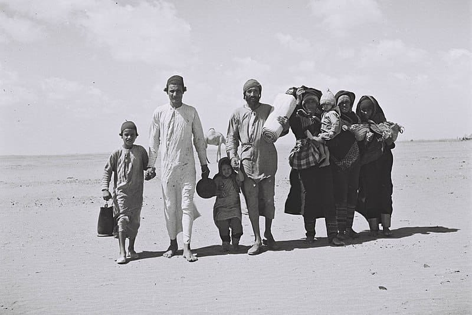
And here the Jews feel pain: the Arabs constantly talk about the Nakba, but why don't they remember that they drove us out too?
Part 3
Song: «Jerusalem of Gold» («Yerushalayim shel Zahav», ירושלים של זהב)
Events: the Six-Day War, the First Intifada (1967–1991)
For the 19th anniversary of Israel's independence (May 15, 1967), the poet and composer Naomi Shemer wrote a song about Jerusalem, a city the Jews cared deeply about returning to. Though at the time the return was "halfway": under the 1949 armistice the country got only the western part of the city.
And in June 1967, Israel was once again repelling an attack. Again by a whole coalition of Arab countries. Again it won. And again it gained control over a larger area than before. A pattern emerges!
Now all the territory the UN had intended for Palestine was occupied by Israel. The internet regularly shares maps of Israel's expansion with the subtext "look how the terrible invaders are crushing the poor Palestinians":
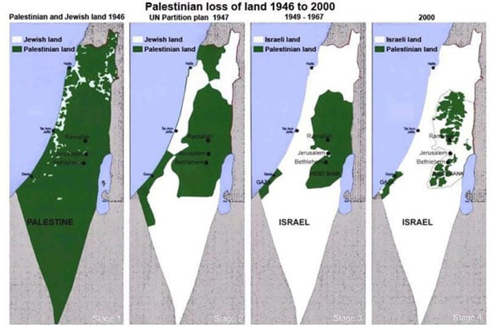
These maps aren't very accurate, and the Jews feel pain here: why are we considered the invaders, if we were the ones attacked? Aggressors came at us, got a beating and lost some land (so they'd know better next time). And that's our fault? They tried to kill us, they failed, so let's annex something.
East Jerusalem was de facto annexed too. The song about the city, presented only a month earlier, suddenly became far more relevant. Now it symbolized "complete victory". And Naomi Shemer wrote one more verse.
The song's first performer was Shuli Natan. But here I'll attach another video, both for the English subtitles and because it's sung by a legend of Israeli music, Ofra Haza:

The song became so important to Israel that it's called the "unofficial anthem". That said, the official anthem, «Hatikvah», matters too; these days people sing it together.
But although all the disputed territory was now controlled by Israel, the problems didn't end. In 1973 came the Yom Kippur War with Arab states, and in 1987 the intifada broke out, a Palestinian uprising. There was no peaceful coexistence.
Part 4
Song: «Song for Peace» («Shir LaShalom», שיר לשלום)
Events: the peace process (1991–2000)
Is this "peaceful coexistence" possible at all? "Left-wing" Israelis believe it is and that it's worth striving for; "right-wing" ones believe the conflict is insurmountable and force is the way.
That's theory, but the whole of the 90s tried to answer in practice. In secret negotiations in Oslo, the Israeli government and the Palestine Liberation Organization held a peace dialogue.
In 1993 they signed an agreement under which Israel would withdraw its army from the land occupied in 1967, and a Palestinian National Authority would be created. But this didn't mean "we hand all governance over to the Palestinians right away": a long, gradual process was envisaged.
That's when «Song for Peace» became more relevant. It had been written back in 1969 by Yaakov Rotblit, who had lost a leg in the Six-Day War shortly before. Its call to sing of love, not war, argues against the militaristic discourse.

In the 90s the song got a new life. But not all Israelis were celebrating in white dresses and daisy wreaths. The peace process required concessions from both sides, and radicals said "you can't help the enemy like this". The secrecy of the negotiations made it harder too: right-wing Israelis felt the pain of "my country is being handed to the enemy without even asking me".
In September 1995, Yitzhak Rabin (Israel's prime minister) and Yasser Arafat (head of the PLO) signed a second agreement. And in November, after a public appearance, Rabin was shot dead by a far-right Israeli radical opposed to the peace process. In Rabin's pocket was the lyric sheet of «Song for Peace», and it was spattered with blood.
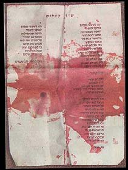
It looks so symbolic that you're tempted to say "this event killed the whole peace process". But I don't know what killed it. Could the process have ended better, or was it doomed? We don't have a control universe where Rabin survived to check.
We only know that when, in 2000, Bill Clinton invited the new Israeli prime minister, Ehud Barak, and Yasser Arafat to his Camp David retreat, no success was achieved.
I've read the claim that Arafat rejected the proposed terms but didn't offer his own. And I see Israelis' pain: "How can we reach a peaceful agreement with people who don't want one themselves? These Palestinians never miss an opportunity to miss an opportunity."
Then you have to respond to violence. And when you defeat the aggressors, the world for some reason pities them. And this creates yet another pain: "Humanity, understand it already: we don't want this war. We're just winning it. What else are we supposed to do?"
Part 5
Song: Subliminal, «Tikva» ("Hope", התקווה)
Events: the Second Intifada (2000–2005)
Israeli hip-hop was born at the end of the "peaceful" 90s, and at first it was partly peaceful itself. Jews started rapping in Hebrew, Arabs living in Israel saw it, and since there was no hip-hop in Arabic yet, at first they joined the movement. The main Jewish pioneer, Subliminal, and the main Arab one, Tamer Nafar, were on friendly terms.
But during the Second Intifada, when supporters of Palestine were blowing up Israeli buses, friendship between peoples went out the window.
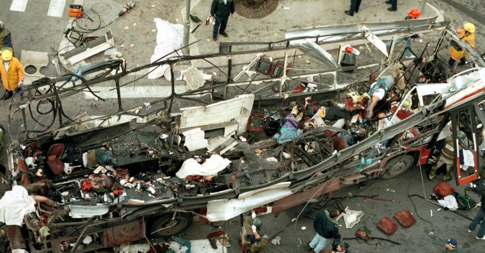
And the hip-hop scene cracked in half. Subliminal and Tamer Nafar fell out (there's even a documentary about it, «Channels of Rage»). Tamer switched to Arabic, founded DAM and began performing for Arab audiences.
And Subliminal became a "Zionist rapper" praising Israel. He began wearing the Star of David as jewelry, called an album «The Light from Zion», and mentioned the problems caused by Arabs in his lyrics. The right came to love him, all the way to the radicals, which he condemns. Roughly: sometimes someone tells me they love my work and it's high time to kill the Arabs, but I don't want death for the Arabs, I want life for the Jews!
I think that's also a Jewish pain: you just want good things for your country, and you get lumped in with fascists.
Here's the song «Tikva»; its mood is that the son of a bitch who can stop Israel hasn't been born yet, that they talk about peace but shoot at us and oppress us themselves, and above all, let's keep living, don't lose hope.

After the intifada, Subliminal cooled down, and later recorded "what a wonderful day" songs with pop artists. You could probably call him "the local Basta" (a Russian rapper who went from street credibility to the mainstream): he went from "the voice of the streets" to "a fat cat". But after October 7, when the lyrics of «Tikva» became relevant again, he posted a recent live performance on his YouTube channel, and as you can see, the crowd's response is powerful.
Part 6
Song: «Shirat Hasticker» ("The Sticker Song", שירת הסטיקר)
Events: Hamas in Gaza (since 2007), the growth of settlements in the West Bank
I often see all Israelis given a single verdict (whether "peaceful sweethearts" or "evil occupiers" doesn't even matter). I think many people don't understand how much opinions differ within Israel. People imagine a single Jewish hive mind (presumably weaving conspiracies).
Speaking of conspiracies. I once came across a Telegram chat of anti-vaccine conspiracy theorists and was stunned by the abundance of antisemitic theories. Obviously they exist, but when you live in your own information bubble, they seem like exceptions. And here you suddenly see them in their full breadth, from the river to the sea.
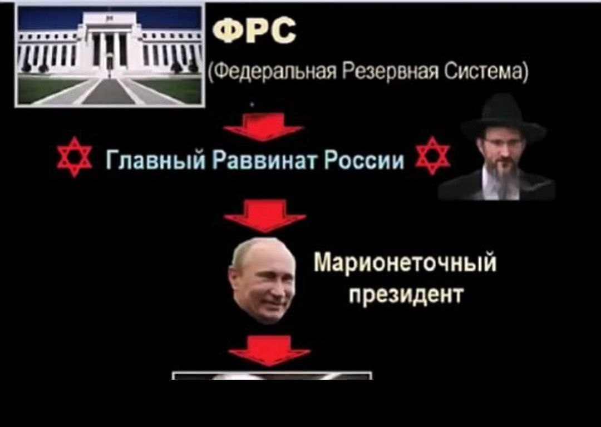
It's partly funny, but when you consider that these conspiracy theorists would approve of pogroms, it stops being funny. And it suggests a Jewish pain: "if we own the whole world, tell me where I can collect my share"? It's kind of insulting when you control every president but can't afford the rent in Tel Aviv.
But while conspiracy theorists discuss plots, Jews themselves joke "two Jews, three opinions". They disagree on a multitude of issues: political, religious, social. And since Israel has far more freedom of speech than the Gaza Strip, opinions clash and boil over.
Here you can name another Jewish pain: why am I held responsible for what other Jews do? If somewhere an aggressive settler killed a Palestinian, why do you assume I approve? And how am I personally supposed to change everything, lie down in front of a Merkava tank?
And the next pain: why are we criticized and not the Arabs, if we're the ones capable of self-criticism and a plurality of opinions? Israel may be wrong about some things, but we have outlets like Haaretz with fierce criticism of Israel, and we put up with them. From the Arabs you won't hear an admission of mistakes; a Haaretz is unthinkable there. To reach peace, both sides need self-criticism. So who's blocking a constructive process?
Israelis often express their pluralistic opinions with stickers stuck on cars or wherever. Like these:
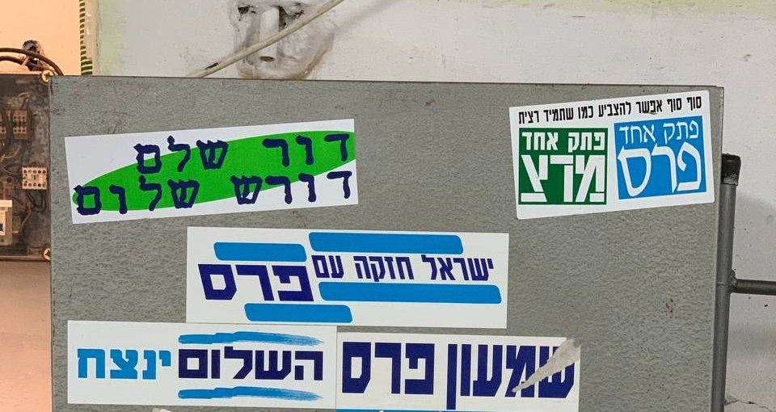
These "peace process" era stickers were recently photographed by an Israeli mobilized into the IDF after October 7:
"found some election stickers here for Ehud Barak and Shimon Peres
'a whole generation demands peace'
'peace will win'
'yes to peace, no to violence'well preserved in a bunker three meters underground"
(translated from Russian)
They look rather different now, yes. "A whole generation demands peace" is the top left (ba-dum-tss) sticker. In Hebrew it sounds very smooth, like a ready-made line for a hip-hop song: "Dor shalem doresh shalom".
And it did end up in a hip-hop song. The writer David Grossman once noticed (in Russian) what a big role stickers play in Israeli life. He started collecting their slogans and then joined them into a verse text. And the band Hadag Nahash performed it:

The video has no subtitles, but the lyrics have been analyzed online. And you can literally study the spectrum of opinion in Israel through them. Everyone is represented: right and left, moderate and radical, secular and religious.
Music aside, what was happening meanwhile? The Gaza Strip, previously occupied by Israel, became fully Palestinian in 2005. A couple of years later, Hamas seized power there. And began firing at Israel from there. We now see how it all ended. And with that, a new sticker appeared:
Part 7
Song: «Bassa Sababa» ("Bummer / cool", באסה סבבה)
Events: the status quo before October 7
In Palestinian music, the conflict with Israel is the main theme, while in Israeli music it often isn't mentioned at all. Say, in 2019 there were protests in Gaza, but the singer Netta released the unrelated hit «Bassa Sababa».

You can feel Israel's connection with the Western world here: dance-pop with half-English lyrics from a Eurovision winner… by the way, why does Israel take part in Eurovision at all?
The formal reason is membership in the European Broadcasting Union. But I think social, cultural and political ties matter in general. Some Jews came to Israel from the West, others stayed in the West. No wonder the country turned out to be "the only democracy in the Middle East".
But the same song has a Middle Eastern side too. Its title is made of slang words: "bassa" means something like "bummer", "sababa", on the contrary, "cool". And it's funny that both of these words… came into Hebrew from Arabic.
The combination of Western and Middle Eastern creates pain for Israel: we've already understood the importance of democracy, tolerance and humanity, but our neighbors not so much yet, so how do we get along? If you're willing to see Arabs as people and they don't see you that way, how do you build a dialogue?
And since Israel is a democracy with Western ties, more is demanded of it. It's required to observe all sorts of conventions. And that's also an Israeli pain: "Hamas fires at us with no regard for civilians, and even puts its own children in harm's way by firing from schools. But if our return fire unintentionally kills their schoolchildren, then WE are to blame for everything?"
It's like a bully beating up a straight-A student, the student hits back, and the adults say: "be smarter, don't stoop to his level". So what do you suggest, re-educating him with fine speeches?
And about "care for civilians"… There's pain here too: "Does the world even realize what these Palestinian 'civilians' are like? Have you seen how they celebrate Jewish deaths? And we're supposed to care about them?"
Israel has its own bloodthirsty radicals, and that's a separate pain: "People eager to blame Israel, we're sick of you taking individual monstrous stories and presenting them as widespread. In Gaza there's a whole system of brainwashing and inciting hatred, while for us these are exceptions. Are you saying you have no lunatics of your own?"
And one more thing. Having taken the Gaza Strip, Hamas made its main goal maximum harm to Israel. For that, for example, it built an extensive network of tunnels. Enormous effort and money went into it, including humanitarian aid that was meant to improve people's lives. And people's lives themselves remained quite poor.
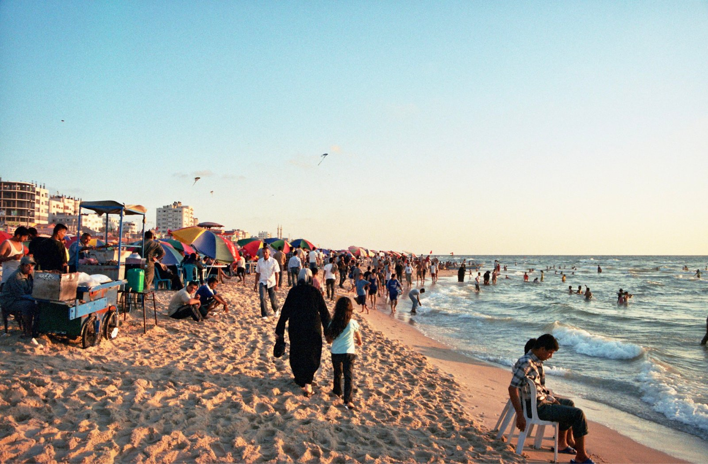
And here a new Israeli pain arises: "They were given the chance to prosper. Left alone, given humanitarian aid. With a beach like that you could build a dream resort and make money from tourists. But they spent their resources on firing at us, scaring the tourists away. What can we do if they want not a good life for themselves but a bad one for us?"
When people say "but Israel imposed a blockade; who wants to build a resort in a concentration camp?", it causes another pain: "And how are we supposed to not block materials for terrorist attacks? And why doesn't anyone take into account that the Strip has a border with Egypt, so it's not only us blockading it?"
Part 8
Song: Ness & Stilla, «Harbu Darbu» ("A Beatdown", חרבו דרבו)
Events: the present
Do I need to explain what hell on earth October 7 was for Israelis? It seems clear enough. But apparently many people don't fully understand. As in: "well, yes, it was a big terrorist attack, but aren't there plenty of those in the world?"
First, it's not often in the world that a grandmother starts a livestream, her relatives tune in to watch, and discover she's being murdered, and the stream from her account was started by her killer. And that's just one of many monstrous stories. So it's not only the number of victims but the extreme sadism, with beheading by hoe and the like. If you try to imagine absolute primal evil, its actions would look something like this.
Second, for the rest of the world the attack ended on October 7. For Israelis it didn't. Rockets kept flying at them from Gaza. Attacks from Lebanon and Yemen were added. The hostages remained with the terrorists. And threats to Jews around the world increased. In short, you can't call it a return to normal life when a car gets blown up on your street.
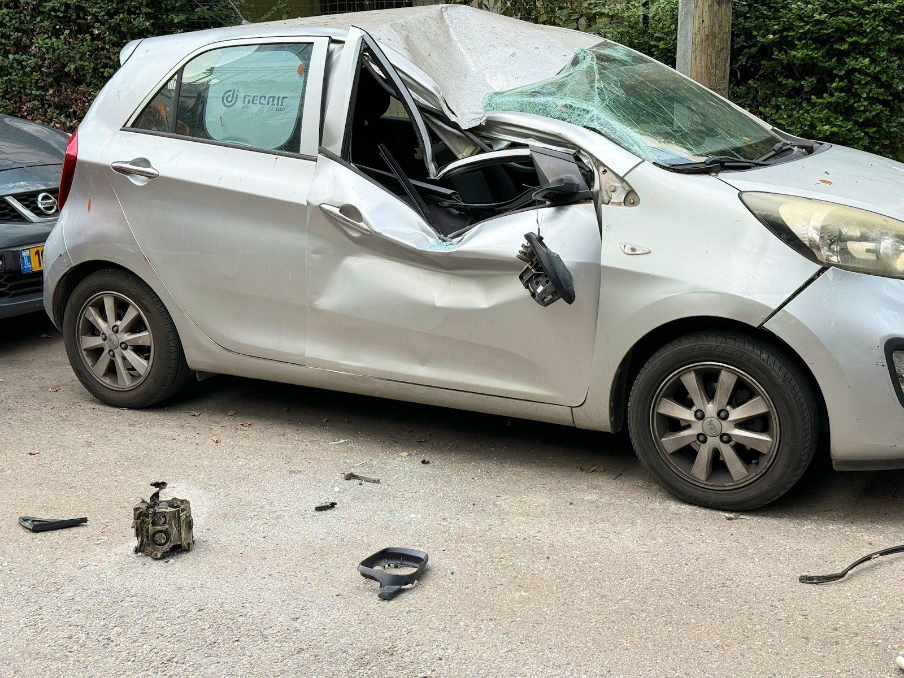
And third, Hamas stated outright: "this is only the beginning, we intend to repeat October 7 again and again". In other words, they said "we intend to commit genocide".
Israelis united in an impulse: "Hamas must be destroyed". The inevitable civilian losses no longer stopped them. The mood became militant: let's rally and support the army, which must both deal with Gaza and defend us from other countries.
The mood was reflected in music too. At first, recovering from the shock, Israelis remembered the song «No More». In 1970 it came out on the debut album of the 20-year-old singer Shlomo Artzi, and now, half a century later, he performed it again. But then a new hit appeared. The duo Ness & Stilla poured out what had built up, and this was no longer sad reflection but going on the warpath.

In short: the rats have crawled out of their holes, they want a "free Palestine" (an ironic take on the slogan "Free Palestine"), but our army will give them a harbu darbu (an expression from Arabic meaning something like "a beatdown"). There's a detailed breakdown of the lyrics on YouTube.
This song became the biggest hit. Though I prefer another new one, «Sha-Ger». It's militant too, with rap combined with singing and male vocals with female. But its climactic line isn't about killing Arabs but about Jewish life: "Am Yisrael Chai" ("The people of Israel live"). The slogan has long been popular, both on its own and as the title of a classic song by "the singing rabbi" Shlomo Carlebach.
«Harbu Darbu» and «Sha-Ger» don't call for the genocide of Palestinians, but there's no reflection on civilian deaths in them either. The world didn't agree with this Israeli discourse: the attack was terrible, but locking up two million people with a shortage of everything and bombing them hellishly is collective punishment, where some are punished for the crimes of others. And in a UN vote, the overwhelming majority of countries voted for a ceasefire:
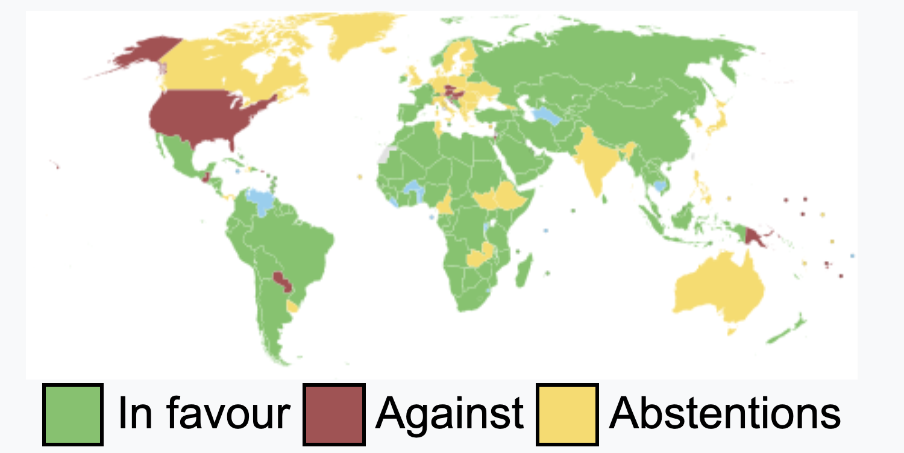
Israel didn't listen to the international community and continued the operation. For which it came under criticism, and its international relations began to deteriorate. And here I see pain: it's easy for you to vote for "humane solutions", but what would you do in our place? How would you allow an organization to exist next door that has announced your genocide and already killed more than a thousand people? There are a million critics, but where are the alternative proposals?
Other disagreements with the world arose too. From the pro-Palestinian side came voices not only in support of civilians but also justifying Hamas's actions. And this caused an understandable pain: "Have you lost your minds? How can you justify such a monstrous terrorist attack? Would you like to justify Hitler while you're at it?"
Many organizations are also criticized in Israel: the UN, Amnesty International and so on. Many believe they're biased, because money is allocated for "the suffering of the poor Palestinians", so whole careers can be built on criticizing Israel. And here there's pain: why do international organizations that should be impartial work against Israel?
What's more, some organizations employ residents of the Gaza Strip who help Hamas. Sometimes medical vehicles are used for terrorist activity. That's pain too: why do such organizations de facto help terrorists yet remain respected in the world?
There were also many complaints about the media. They seriously messed up when even respected outlets spread the fake story of Israel striking a hospital. The Israeli show «Eretz Nehederet» ("A Wonderful Country") parodied the BBC, showing how world news looks to Jews. The result is pain: why is the media so biased against us, are they antisemites?
Overall, Israelis feel they live in a hostile world. Calling for the genocide of Jews seems no longer acceptable in the world, but all sorts of organizations, politicians, journalists and public figures are still set against Israel. Historically, the people were the scapegoat to blame for every misfortune, and they seem to have remained so. That's also pain: being the world's ultimate "other".
And a separate difficulty with the world is the rise in antisemitic sentiment and incidents. That's also pain: in 2023, being a Jew on planet Earth (including developed Western countries) suddenly became unsafe again. And this at the very time when safety vanished even in their own country. But there, at least, there's an army to protect them. "So let the army protect us properly, damn it."
In short, having described the whole history of the Jewish people, we come back to the fundamental first pain: someone wants to kill the Jews again. No wonder they object.
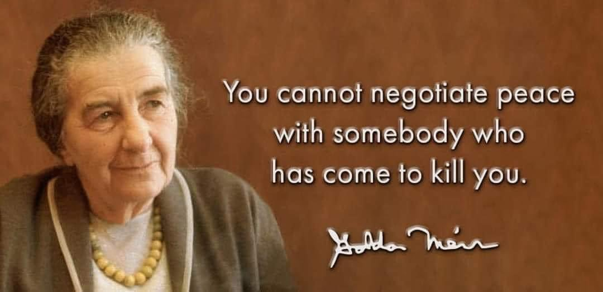
My view
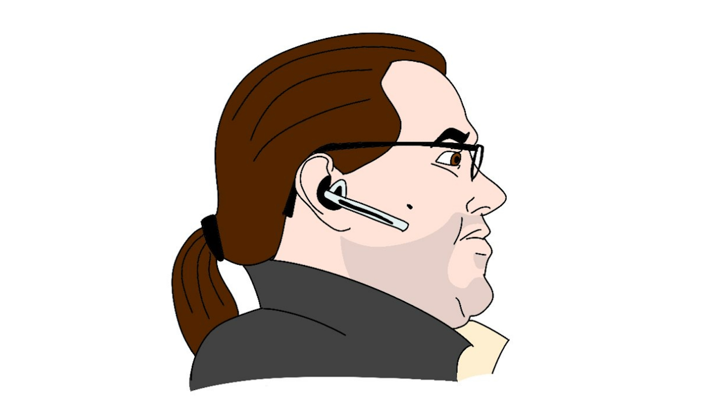
Okay, we've learned the views of both sides; now what? Whose flag do I need to post to be a good person?
I don't consider myself the truth (maybe I'll rewrite all of this myself later). And I don't want to impose my opinion. Especially on Palestinians and Israelis: I haven't been under bombardment, so what can I even know about their experience?
But I'll cautiously speak up for people on the outside. I think a civilizational conflict is flaring up that goes far beyond a tiny strip of land. What humanity writes on the internet partly determines how well we can all get along on this planet.
And I think that right now, as humanity, we're only making the problem worse. Looking at the internet, I feel not even "we should write the opposite" but "we should write perpendicular". Why, and how?
Part 1: Escalation
Song: DUGRI, «Mumfas»
A spiral of violence is now frighteningly unwinding:
- Hamas horrifically escalated the situation with a terrorist attack that killed a thousand people.
- In response, Israel caused dozens of times more deaths.
- Then antisemitism rose around the world.
- And antisemitic acts fuel Islamophobia.
- Ships began to be attacked from Yemen, widening the conflict zone.
- In response, the US formed a coalition, drawing in even more countries.
Where it will lead is hard to say. I don't rule out scenarios up to World War III, and then we'll all regret not preventing it. I used to think "how could humanity have been drawn into World War I", and now I look around: "ah, that's how". Maybe we'll learn the lessons?
So far we aren't: on the internet, people escalate and dehumanize too. This picture was once considered funny; now it's a literal description of the discourse:
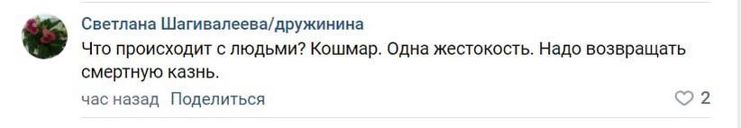
The statements are often genocidal: "flatten Gaza", "From the river to the sea Palestine will be free" (and what will happen to the Palestinians and Israelis then?).
And everyone decides "whose side to be on". But here's how I feel: a fire is flaring up, and instead of putting it out, we're choosing which side to pour gasoline from.
Here's a well-known illustration of "horseshoe theory":
If you mentally replace "left" and "right" with "Palestine" and "Israel", everyone is arguing whether to be on the right or the left. But what worries me is the vertical axis: centrism at the top, radicalism at the bottom, and we're all falling down. So my view here is literally perpendicular to the general one.
How do we get back to something more moderate? It's a hard question, but we can at least stop and think before posting on the internet: am I adding fuel to the fire, am I dehumanizing people?
This problem of radicalization was voiced in 2021 by the peace-minded duo DUGRI, a Jew and an Arab: all the moderate voices are being drowned out, and we have no air to breathe.

Part 2: Gridlock
Song: Noa & Mira Awad, «There Must Be Another Way»
The deeper I went into the problems of both sides, the more often I saw the problems running into each other. And the word "gridlock" came to mind. It's a traffic jam where everyone blocks everyone else and nobody can get through:
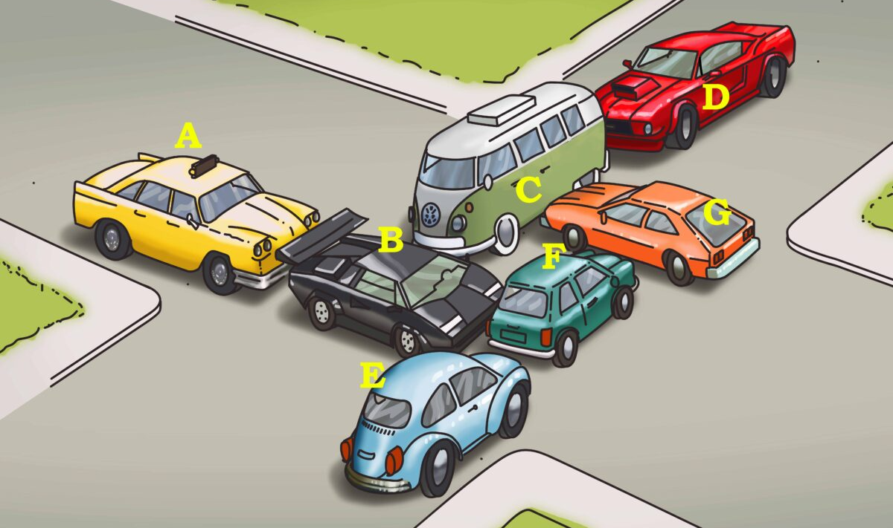
Why did Israel impose a blockade on Gaza? Partly because otherwise lots of rockets would get in to fire at it. Naturally, people defend themselves against that.
And why do people in Gaza fire at Israel? Partly because the blockade is inhumane. Naturally, people in it will hate the "jailers".
That's how a closed cycle of violence arises. Figuratively speaking, Palestine wants to punch Israel in the face, and Israel twists its arms to protect itself. When this goes on for generations and people are born with their arms already twisted, of course they'll want to break free and hit the one twisting them. And of course, then he'll keep twisting. Everyone is in pain, and because of that, everyone goes on being in pain.
Everyone would be better off without the gridlock (except the people who build careers on it; unfortunately, many decisions are made by exactly them). But to get unstuck, someone has to "back up" first. And it's hard for either side to do: "They treat us horribly, and we're going to give them the chance to do even more?!" Surprisingly, this is best described by a meme quote from Margarita Simonyan, the head of the Russian state channel RT:

Ideally, both sides would have to back up at once, agreeing through a neutral mediator. But in the 90s that didn't work. And right now nobody will even listen. Could it work in the future?
Honestly, I have no idea. All that's clear is that it's insanely hard. So many mutual grievances have piled up that trying to reach an agreement is like building a hundred-story house of cards. And if the house collapses, it could bury many people under it.
On both sides, many would like the other to disappear. No wonder people everywhere say: "Are you crazy, talking about steps toward each other? They'll pretend to agree, but we'll hold out a hand and they'll bite it off to the elbow."
Those risks are real. But the alternative on offer is "just keep ramming forward". And here I want to ask: don't you notice that in a hundred years this approach hasn't overcome the gridlock either? That it has also buried many people under it? And is burying them right now?
So now, when half the internet calls for ramming in one direction and half in the other, it feels to me like "two rams on a bridge who both end up falling into the water". And I look perpendicular: maybe another way is possible here after all?
The same question is asked by a joint Arab-Jewish song that Israel performed at Eurovision 2009 in Moscow:

Part 3: Who's to blame
Song: Tzachi Halevi & Lucy Aharish, «Seen»
The main question for the internet is "who's to blame". An academic discussion is under way: some shout "TERRORISM", others "GENOCIDE", and whoever shouts loudest wins.
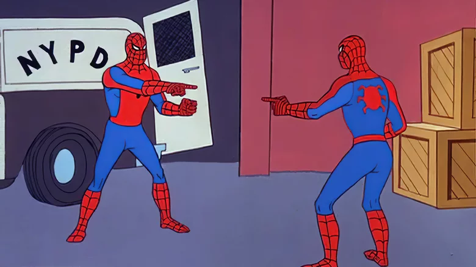
And here again I feel perpendicular: while everyone decides "who's to blame", what matters far more to me is "what is to be done" (the two classic questions of Russian literature, as it happens).
Arguments about "who's to blame" are pointless, because historical facts can easily be shaped into any narrative here (decolonial or anti-terrorist) with anyone to blame. Give me any argument from either side, and I can convincingly object.
So arguments like these can only achieve escalation, that is, the worst-case scenario.
Besides, the right answer to "who's to blame" is in the first three seconds here:

But in the "what is to be done" format I see something constructive. For example, who should control Gaza after Hamas is removed, if Palestinians are strongly against "the Israelis", and vice versa? I've seen the idea of "an Arab coalition"; it sounds interesting, and compromises like that are worth discussing.
On both sides I also see the point "I'm not a fan of violence, but what else can we do if they don't understand anything else". So I think this kind of dialogue is useful:
"Pro-Palestinian side, tell us: if you'd been born in Israel, what would you do after such a terrorist attack? Can you offer Israelis a plan without violence?"
"Pro-Israeli side, tell us: if you'd been born a Palestinian, what would you do about Israel gradually taking West Bank land? Can you offer an ordinary Palestinian a plan without violence?"
I think it's useful because it matters to all people to be seen and understood, and that helps de-escalation.
Israel has a celebrity mixed marriage: the Jewish actor Tzachi Halevi and the Arab TV presenter Lucy Aharish. And in 2020 they recorded a duet:

The key line is "I want you to know that you're seen". Did they mean the same thing, that "it matters to people to be seen"? I don't know, but that's how I take it.
Part 4: Complexity
Song: U2, «The Cedars of Lebanon»
Many people say: "It's all very simple, what's there to think about." Only for some it's "it's all simple: peaceful civilization against barbaric terror", and for others "it's all simple: an oppressed people against a colonial oppressor".
Here too I'm perpendicular: what's closer to me isn't either of these but "it's all complicated". And I recall U2's song «The Cedars of Lebanon»:

Its hero is a Western journalist in Lebanon. And my favorite lines are about him squeezing complicated lives into a simple headline:
Spent the night trying to make a deadline
Squeezing complicated lives into a simple headline
Since October 7, every time I open the news, I remember these lines. This conflict doesn't fit into a headline. Or a TikTok. Or a tweet.
These texts of mine came out extremely long, but even they contain a VERY SIMPLIFIED history of the conflict, leaving out VERY IMPORTANT factors (like Iran).
Meanwhile other people, after three TikToks, give advice on a cosmic scale, like "let the Jews go back to the West" or "let the Palestinians move to Jordan" (spoiler: both ideas are unworkable, if only because of Jerusalem). That's not surprising, but it's a pity that incompetence adds fuel to humanity's main conflict.
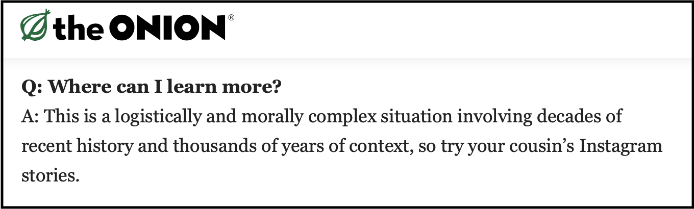
So what then, keep my mouth shut if I haven't read a hundred books on the subject? I think it can be done differently (I haven't read a single one).
Some statements don't require being a historian. For example, "the October 7 attack is horrific": for that you need not textbooks but a heart.
And about complex questions you can write while stating how familiar you are with the subject and using the form of a question: "I'm just passing by, but I wondered: couldn't Egypt simply take in all the refugees?"
Part 5: Subjectivity
Song: «This Land Is Mine»
Complexity has another trap.
Having realized "it's all complicated", some people dig into sources to find the Real Truth. And then they run around the internet waving links: look, I found an article from 1967 and now I Know For Sure Who's Right.
The article may be awful propaganda, but that's not even the problem. The problem is the certainty that every question has an Objective Answer. I think it often doesn't.
For example, many reproach the Arabs: "You should have agreed to an equal partition in the 1940s; you'd be living happily by now." But at the time they considered the partition unjust. And who can Objectively Assess the justice of it? It's not just "cutting a sandwich in half": there are loads of factors (from population density to old agreements), and which matter more?
And the Jews are sometimes told: "You cling too much to a scrap of land in a dangerous region. The US would probably give you all of Wyoming; it's square and was invented for laughs anyway. And everyone would live in peace." But if living on the land of your ancestors matters to people, how do you Objectively Assess whether they cling to it "too much"?
And how do you answer the key question, "whose land is it"? Here I love this video (it even has historical notes):
According to it, the answer is:
It depends on which page you open the history textbook to.
Until people realize point 1 and keep defending "the one truth", the land will belong to death. This land was ours until we got bogged down in the fighting.
And I think it's important to realize this about the conflict:
— some of its questions have no "right" answer
— yet both sides are sure "there is one, right here"
— and their answers are incompatible
Getting out of that isn't easy. But understanding the situation is already a step forward compared to the certainty of "I've worked through the sources and I Know For Sure".
Part 6: Everything is broken
Song: Sagol 59, Tamer Nafar, Sha'anan Streett, «Summit Meeting» (ועידת פסגה)
The crisis showed that the problems aren't only in Israel/Palestine themselves: ROUGHLY EVERYTHING IN THE WORLD that's supposed to help is broken.
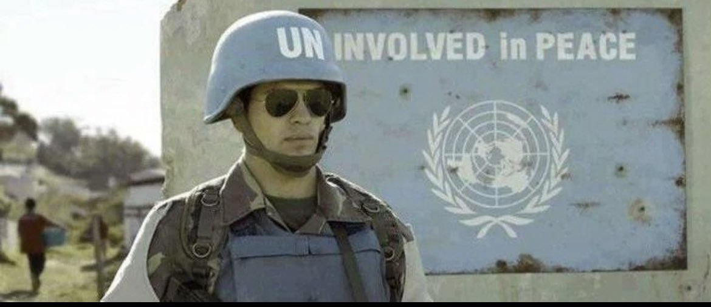
It's no secret that the UN is ineffective. But here the organization is also accused of pro-Palestinian bias.
The International Criminal Court in The Hague, on the contrary, didn't open investigations into the Palestinians' complaints for years.
Human rights and medical organizations sometimes have a "saintly" halo, but in Israel Amnesty International is called a biased cesspool.
Journalists regularly do crazy things, in both directions. Besides the high-profile story of spreading Hamas's fake about the bombing of a hospital, there are tons of small ones. Here an author mangles the English language, apparently trying to soften a tragedy:
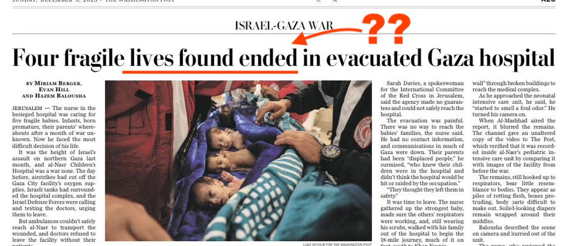
Humanity hasn't even given its key concepts clear definitions. The internet argues whether what's happening in Gaza is genocide or isn't, and the definition in the UN convention is so broad that it's almost meaningless and doesn't help end the argument.
International law is in bad shape too. I'm no expert, but I feel it was written for "ordinary" wars, and it fits the unique situation of "a blockaded city run by terrorists" poorly. And it gives no clear answers where millions of lives are at stake.
And the whole Western left ran aground. After defending gay people, women and Black people, it found new people to defend in the Palestinians. But what do you do with the fact that they've just committed a monstrous terrorist attack? The left set about shielding Hamas in the spirit of "where's your proof" (hello, the terrorists posted plenty of proof themselves).
So the far left and the far right came together in their readiness to dehumanize Jews.
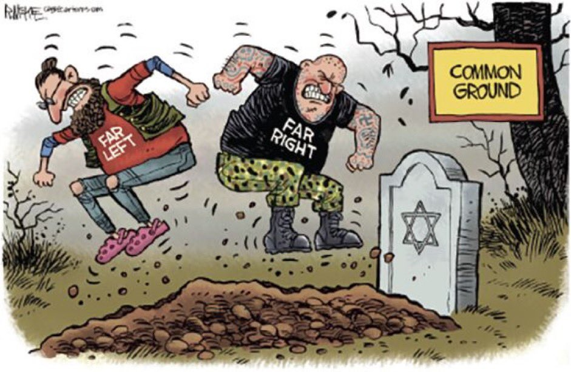
I see a million complaints about all this on the internet. And here my perpendicularity is this: maybe, besides plain cursing, we'll find room for something constructive?
For example, there are lots of arguments about "genocide", "apartheid" and the "prison city". These words don't quite fit the situation. But it's so unique that we have no better-fitting ones, and the problems need naming somehow. So maybe humanity needs new terms, and it's worth starting to talk about that?
And are all these "external world forces" mentioned in music? Not much, but the peace-loving 2001 song «Summit Meeting» is named after an international meeting within the "peace process". It's the first joint Arab-Jewish track in hip-hop history. The Israeli rapper Sagol 59 invited another Jew, Sha'anan Streett (of Hadag Nahash), and an Arab, Tamer Nafar (of DAM), and each rapped a verse in his own language.

Part 7: Similarity
Song: Noize MC, «Jordan»
Although the conflict is asymmetric and the sides differ in many ways, they often say the same things:
- "We're a persecuted people"
- "Jerusalem is holy to us"
- "We just want to live on our land"
- "And they want to kill us, or at least drive us out"
- "There's no reaching an agreement with them, they only understand force"
- "The media lie in their favor"
- "It hurts us to see our loved ones die"
- "Chocolate hummus is a mockery of our dish"
Reading the sources of both sides, this often comes to mind:
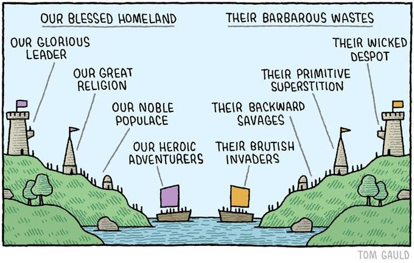
But the main thing they share, I think, is this:
- "Obviously, we're the victim and they're the aggressor"
- "We're like David against the giant Goliath"
How can both sides be David at once?
Palestinians see it like this: "We're throwing stones at tanks: they have an army, and we only have ourselves. Let your guard down and they'll crush you."
And Israelis like this: "We're a small Jewish country among a bunch of hostile Arab ones. Let your guard down and they'll crush you."
The similarity is reinforced by the Semitic languages. Arabic and Hebrew have almost identical greetings: "as-salamu alaykum" and "shalom aleichem" both mean "peace be upon you". You can't help thinking: how could a conflict even arise between almost brotherly peoples? (And then you remember a few things.)
This echo of greetings was played on long ago in «Jordan», a song by Noize MC (officially labeled a "foreign agent" in Russia, I'll note just in case) and Atlantida Project.

Alexandra Sokolova sings that everyone will make peace, "shalom aleichem" answered by "wa alaykum salam", meaning "even Jews and Arabs". At the time of the recording she was already ill with cancer, and soon she was gone. But the video is remembered, and in October a new comment appeared under it: "Will this song ever stop being relevant? 💔"
Part 8: The main thing
Song: DUGRI, «Let's Talk Straight»
Having listened to Arabs and Jews, I felt that many of them live in their own narratives and don't hear each other. They don't just disagree; they don't even understand the other side. Well, that's how humanity works in general. But this conflict has been untangled for a hundred years, and nothing has budged.
Here's an example of the difference in narratives. Once a Jew burned down a Palestinian family's house with a child inside, and then, at a far-right Jewish wedding, people danced with a photo of that child. Of course it's horrible, but what matters is that in Israel the killer was convicted: society there as a whole is against such things.
In Arab circles, this case is chewed over and exaggerated. Up to the claim that "this is now part of Israeli wedding rituals":
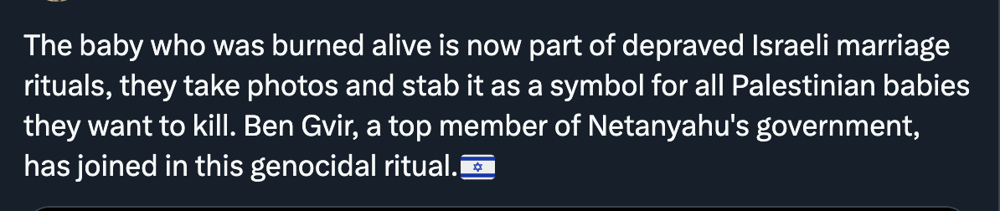
Israelis who never heard the original story see these words. And they don't just object to the exaggeration; they're shocked: "what nonsense they've made up, Jews couldn't really have burned a child":
So there are two narratives: the Arab one, "all their weddings are like that", and the Jewish one, "they make up horrors about us out of thin air". And both distort reality in opposite directions. Is it any wonder people can't find common ground?
Sometimes the facts aren't even twisted, just selectively chosen. For example, there's a long list of "Israel's sins". It's not made up; everything has sources. But reading it gives the false impression that "all Jews are monsters". Arabs often draw their conclusions from things like this. The effect can work the other way too: an Israeli notices Palestinians when they commit terrorist attacks, not when they harvest olives, and draws conclusions only from the former.
David Simon, the creator of a number of American TV series, is known for moving away from black-and-white perception: in his «The Wire», cops and criminals turn out not to be one-dimensional "heroes and villains" but living people. They're all flawed, but all of them can be understood, and all are partly victims of the system.
And about Israel and Palestine he produced a Twitter thread saying he's fed up with "knowing-half-of-this-story" debaters who ignore one side and don't want to accept the inevitable reality: roughly, that two traumatized peoples have to share the same land, and part of it may remain a home for Jews for another 75 years, but only if there's also a state of Palestine.
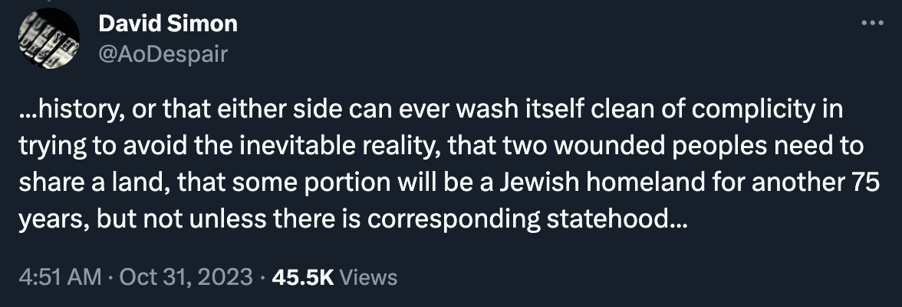
I agree with the description "two traumatized peoples": both have a lot of pain. No wonder they may not hear each other: it's hard to share someone else's pain when you're feeling your own.
And no wonder things boiled over in the Gaza Strip. If you fence people in, they stop seeing the other narrative altogether, and that radicalizes them.
How do we fix this? I don't know for sure, but I recall the finale of the rap battle between the Jewish (and also "foreign agent") Oxxxymiron and the Arab Dizaster. Miron said there that battles, for all their outward harshness, can promote peace. When people make dirty jokes about each other, they notice how alike they are, and then they want to kill each other less. It's here, from 49:00:

This is my favorite round in battle rap. Instead of banal "yo mama" jokes, a serious statement about peace. But with some dirt sprinkled in at just the right spots, so the audience doesn't get bored but laughs. In his previous battle, Miron had lost to Gnoyny by being too much of a bore, and here he did a great job of learning from his mistakes.
That said, Miron himself no longer sees salvation in anything. Do I?
I don't know about "saving", but I think that for at least minimal de-escalation it helps to convey the pain of both sides. Right now the pro-Palestinian side may think the Jews oppress for no reason, and the pro-Israeli side that the Arabs kill for no reason. And people on both sides gain a much fuller picture of the world when they truly understand the other.
There are Jews who visited Palestinian towns and noticeably reconsidered their views. There are Arabs who were influenced by getting to know the pain of the Jewish people. And there's my favorite song, which is meant to have exactly that effect.
In 2017, the American rapper Joyner Lucas made the video «I'm Not Racist», in which two Americans of different skin colors air their grievances against each other and end up understanding each other. And in Israel, the Jewish UR and the Arab SAZ, inspired by it, made their own video with the mutual grievances of two peoples. I think it turned out very well, and it's the video I rewatched most in 2023.

After October 7, things have been very hard for both of them, but they didn't give up and continued their "reconciliation" work.
I think this kind of "explaining the pains" is the best thing we can do right now. That's actually why I wrote both of the other "views". If it seems useful, feel free to share it.
And if you'd like to hear more from moderate people on both sides, you can follow a couple of Twitter accounts: a Palestinian one and an Israeli one. Or watch the series «Mo» and «Fauda».
Finally, a meme; I think I'm the one on the left here, and the internet is on the right:
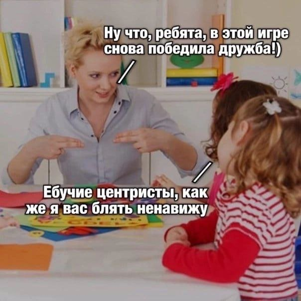